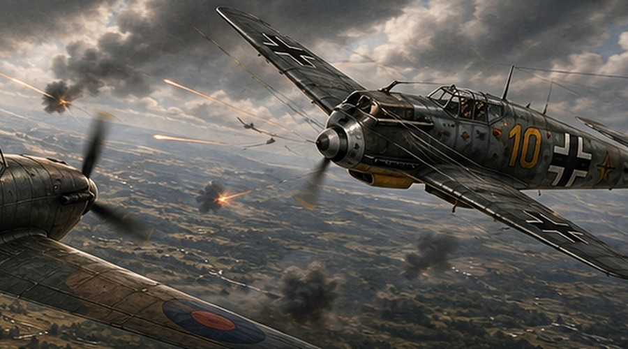

C.205 operations · 1943–1945
The Macchi C.205 Veltro carried the C.205’s clean airframe into the DB 605 era, adding more power and improved armament while arriving during Italy’s most complicated wartime period. It served with pre-armistice Regia Aeronautica units, ANR units in northern Italy and Co-Belligerent forces. A good C.205 build starts with the exact route: Regia Sicily/mainland aircraft, ANR Veltro, Co-Belligerent route, captured/evaluation subject or survivor/reference aircraft.

Role & strengths
- Italian DB 605-powered late-war fighter with Regia, ANR and Co-Belligerent routes
- Sicily, Italian mainland, northern Italy, captured/evaluation and survivor-reference subjects
- Elegant Macchi fuselage, upgraded engine, 20 mm cannon options and white theatre bands
- Italian smoke-ring/mottle, green/grey late-war finishes, ANR markings and Regia fasces routes
- Exhaust staining, oil streaks, radiator grime, airfield dust, fading and restrained chipping
Key theatres
- Sicily and Italian mainland Regia route
- ANR northern Italy defence route
- Co-Belligerent and captured/evaluation routes
- Survivor and restoration-reference routes
Specification C.205V
Survivor/reference today
C.205 references rely on survivors, restorations and period photos. Use them for the Macchi shape, cockpit, radiators and gun fit, but verify camouflage, ANR/Regia markings and white bands separately.
View referencesTimeline highlights
Build this C.205 as…
Pick the operator first. Regia, ANR, Co-Belligerent, captured and survivor routes all need different markings.
Aircraft identity
Regia, ANR and Co-Belligerent C.205s use different markings. Pick the exact aircraft before decals.
Cannon and wing fit vary by series. Do not assume a C.205 boxing or C.205 marking route works for a Veltro.
Paint scheme cards
Regia route with Italian camouflage and white theatre bands.
ANR northern Italy route with late-war markings and restrained wear.
Operator-specific route with repaint and national marking checks.
Weather radiators, exhausts, wing roots, gun ports and belly grime logically.
Campaign cards
Sicily/mainland route with late Italian camouflage and pre-armistice markings.
Late-war route with ANR markings, air defence context and restrained grime.
Post-armistice Allied-side route with specific national marking checks.
Non-standard operator route where references are essential.
Build difficulty and related guides
Medium-high. Similar to C.205, but armament and operator markings need sharper checks.
High. Regia, ANR and Co-Belligerent routes are easy to mix incorrectly.
Medium. Late-war wear should be visible but controlled.
Macchi C.205 Veltro units and operators
Sortable C.205 cards covering Regia, ANR, Co-Belligerent, captured/evaluation and survivor/reference routes.
C.205 Veltro operating map
Airfield info
Click a marker to show linked C.205 unit cards and modelling notes.
Campaign timeline
Survivors
Books and reference sources
C.205 Veltro build guide
C.205 Veltro videos, photos and archive material
Media replaces the old separate walkaround tab: cockpit, exhaust, undercarriage, markings, survivor references, archive imagery and video cards are grouped here.